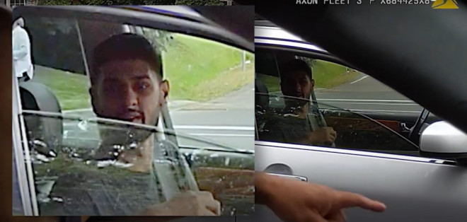

约克区警局（YRP）正在寻找一名在Thornhill被警员拦截后加速逃离的男子，警方公布了视频，并表示涉事的车辆可能是被盗车。

图源：YRP
8月3日下午12点45分左右，一名警员在Yonge Street和John Street附近观察到一名司机未系安全带，他驾驶一辆四门银色轿车。
视频显示，警员靠近嫌疑人并要求他摇下车窗。然后他告知嫌疑人不能在没有系安全带的情况下驾驶车辆，并指示他靠边停车。
司机最初听从指示，系上安全带，并对警官说了一些听不清楚的话。然后他突然加速逃离，右转进入John Street，以极快的速度行驶，超过一辆车并闯过一个停车标志。
过程中，没有车辆驾驶员受伤。
YRP表示，嫌疑人的车牌（ATPY666）并未注册在他驾驶的车上，表明该车可能被盗。
男性嫌疑人被描述为20到30岁之间，体重约150磅，中等身材，短黑发，留有胡须。他最后一次被看到时穿着灰色T恤。
嫌疑车辆为2006款英菲尼迪M35X。调查仍在进行中。